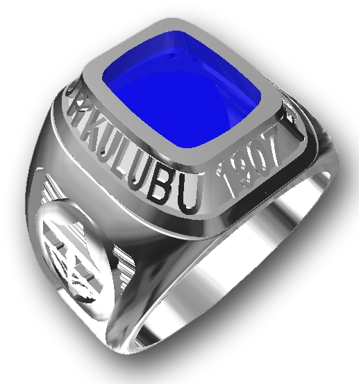
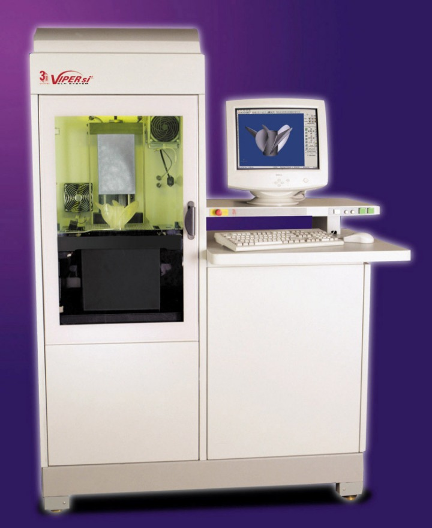
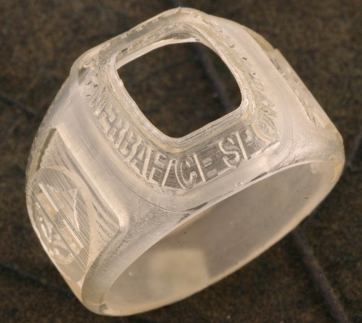
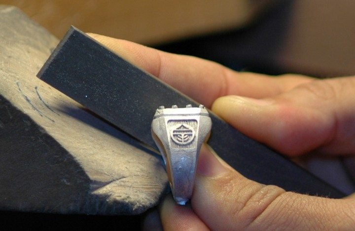
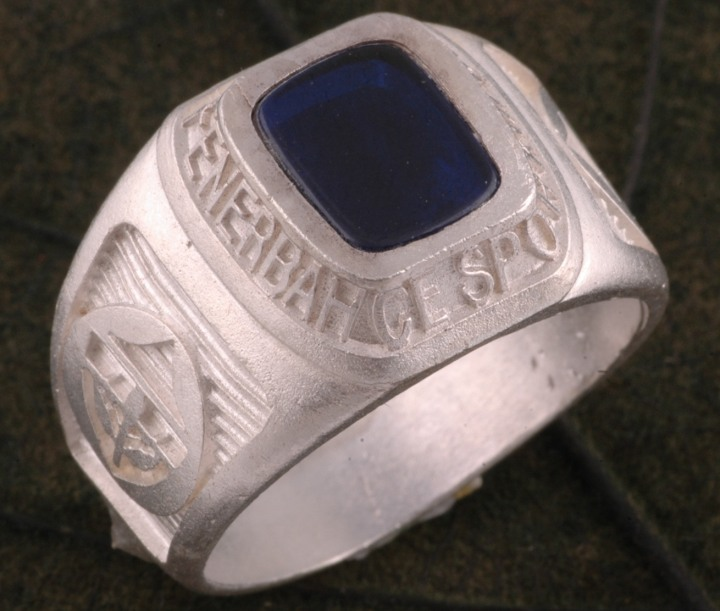
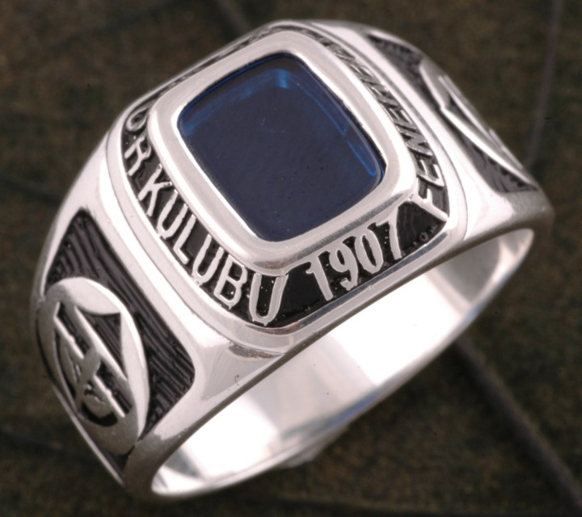
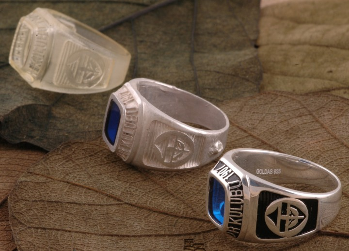
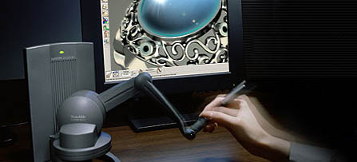

Ozan Batýr
Lisanslý Ürünler Tasarým Sorumlusu
GOLDAÞ Kuyumculuk
Ekim 2005, Ýstanbul
Not: Ýlk defa TurkCADCAM.net
Dergisi Ocak-Þubat 2006 Sayýsýnda yer almýþ bu makale, yüksek çözünürlüklü resimlerle birlikte Ekim 2008'de TurkCADCAM.net portalýndan yayýnlanmaya baþlamýþtýr.
Bildiðiniz üzere Bilgisayar Destekli Tasarým Sistemleri ve 3D Printer cihazlarý (otoinþa teknolojisini kullanan imalat makineleri) her sektörde olduðu gibi kuyumculuk sektörüne de girmiþ bulunmakta. Günümüzde teknolojinin girmediði bir sektör artýk yok gibi. Yeni teknolojiler tasarýmcýlara yeni ufuklar açmaya devam ediyor. Artýk tasarýmcýlar, "üretilemez" denen ürünleri tasarlayýp üretiyor, gittikçe "akýllý ürün" hedefine yaklaþýlýyor.
Geliþen CAD programlarýnýn esnekliði ve otoinþa teknolojilerinin çok karmaþýk modelleri üretme kabiliyetine sahip olmasý nedeniyle, kuyumculuk sektöründeki modellerin artýk el iþçiliði gerektirmeden modellenmesini saðlamaktadýr. Bunun yanýnda saðladýðý kazanç ve avantajlar arasýnda zaman tasarrufu, geri dönüþlerle 3D CAD model revizelerinin kolaylýkla yapýlabilmesi, modelin istenilen ölçek ve/veya boyutta üretilebilmesi, tasarýmla üretimin baðlantýsýnýn saðlanmasý bulunmaktadýr;

3D CAD modeli

3D Printer (3D Systems / Viper SLA)

Master Model (Malzeme: fotopolimer reçine)

Hassas döküm sonrasý gümüþ model tesviye ediliyor

Yüzük son aþamaya gelmek üzere

Parlatma ardýndan ürünün son hali
Kuyumculuk sektöründe yaygýn olarak kullanýlmaya baþlayan bilgisayar destekli tasarým (CAD) ve birçok otoinþa cihazlarýnýn kullaným alanlarý ve getirdiði kolaylýklar ile ilgili birkaç baþlýk açmak istiyorum;
Kalýp yapýmýnda kullanýlmasý:
3D model tasarlandýktan sonra çeþitli 3D Printer cihazlarýyla üretilen master model silikona alýnýp negatif kalýbý oluþturulur. Silikon kalýba döküm mumu enjeksiyonu ile seri üretimde kullanýlabilir hale getirilebilir.
Direkt döküm modeli olarak kullanýmý:
Ýstendiðinde seri üretime girmeden direkt olarak modelin döküm prosesinden geçerek ürün haline gelmesini saðlar. Bu teknik, az miktarda üretilmesi gereken özel sipariþlerde çok iþe yarar.
3D Printer çýktýlarýnýn hassas dökümde direkt olarak kullanýlabilmesi için malzemenin standart döküm mumuna benzer özelliklerde, kül býrakmadan yanabilen bir özelliðe sahip olmasý gereklidir. Son yýllarda, kuyumculýuk sektörünü hedef alan birçok 3D Printer üreticisi, inþa malzemelerini bu yönde geliþtirmiþlerdir.

3D Printer modeline baðlý olarak yapýlan imalat aþamalarý bir arada görülüyor
Hýzlý prototip amaçlý kullaným:
Bir tasarýmcý ne kadar bilinçli tasarým yaparsa yapsýn ya da teknik resimler kullansýn, yine de üç boyutlu nihai ürünü elinde tutmadan, ona dokunmadan, içini dýþýný görmeden yanlýþýný çözemeyebilir. Bunun yanýnda zihninde tasarladýðý ürünün birebir boyutlarýný, olmasý gereken þekle adapte edemeyebilir.
3D Printer cihazlarý ile hýzlý bir þekilde üretilen prototipler sayesinde tasarýmcý modeli çok kýsa bir sürede eline alarak inceleme fýrsatý bulur;
Hýzlý prototip imalatý, yeni model bir takýnýn üretilip kataloða girmesine kadar geçen sürelerde meydana gelebilecek hatalarýn ya da gözden kaçabilecek detaylarýn, önceden teþhis edilerek revize edilmesine imkan saðlar.
Bir grafikerin, çizdiði paftanýn çýktýsýný gördüðünde daha iyi yorum yapabilmesi gibi, 3D Printer makineleri de bilgisayarda tasarlanmýþ modeli elinizde tutarak inceleme þansý verir. Bu da tasarýmcýnýn modeldeki boyut-þekil iliþkisini kurmasýný saðlar.
Kopyalanmasý imkansýz modellerin üretilebilmesi:
Bugün birçok hit model, kopyalanmaya mahkumdur. Özellikle kuyumculuk sektöründe tutulan bir modelin kopyalanma süresi bir iki haftayý geçmez. Böyle bir rekabet ortamýnda üretimi teknoloji gerektiren ya da el ile kopyalanmasý mümkün olmayan modellere ihtiyaç vardýr. Bilgisayar Destekli Tasarým ve 3D Printer makinelerinin saðladýðý bu avantaj, kuyumculuk sektörüne kazandýrýlan en önemli fonksiyonlardandýr diyebiliriz. Zira 3D Printer makineleriyle, silikon kalýplamayla kopyalanamayacak kadar karmaþýk modeller kolaylýkla inþa edilebilir.
Özgün tasarýmlar oluþturma:
Artýk bu modern sistemleri kullanan taký tasarýmcýlarý, özellikle ustalarýn inisiyatifine kalmadan, daha özgün, daha yenilikçi, üretim korkusunu daha az taþýyarak kopyalanmasý zor, satýlabilir, özgün, farklý, müþteri odaklý, akýllý modeller geliþtirmeye baþlamýþtýr.
Son yýllarda, kuyumculuk sektörüne yönelik olarak daha stabil, özellikle taký tasarýmý için daha esnek çizim programlarýnýn yazýlmasý, sektördeki tasarýmý hýzlý bir geliþim sürecine sokmuþtur. Bu sayede geç de olsa 3D Printer sistemleri* kuyumculuk sektörüne de baþarýlý þekilde entegre olmuþtur.
Kuyumculuk sektörü için geliþtirilen yazýlýmlar arasýnda JewelCAD, Rhino/Matrix, ArtCAM JewelSmith, 3DESIGN, JCAD3 gibi programlar bulunmaktadýr.
SensAble FreeForm Sistemi
SensAble firmasýnýn ürettiði, dokunma hisli / kuvvet geri beslemeli (haptic / force-feedback) FreeForm Sistemi ise özellikle hayvan, doða, fantastik, organik formlar, obje ve aksesuar gibi sanatsal formlar için mum model iþler gibi sanal heykeltýraþ aletleri ile form oluþturma özgürlüðü saðlayan çok farklý bir üründür.

Kuyumculuk sektöründeki tasarým anlayýþý, mühendislikten farklý olarak katý modelleme programlarý ile metrik ölçü ve hesaplarla çalýþmak yerine, esnek, özgür çalýþýlabilen, yüzey formatlý programlarla daha artistik tasarýmlar yapmak üzerine geliþmektedir.
GOLDAÞ Kuyumculuk bünyesinde birçok özel uygulamaya yönelik çeþitli marka 3D CAD yazýlýmlarý, farklý model 3D Printer cihazlarý ve lazerle talaþlý üretim - markalama tezgahlarý bulunmaktadýr. Bu güçlü altyapýnýn sunduðu avantajlar sayesinde GOLDAÞ, ürün tasarýmcýlarýna yeni ufuklar açmaktadýr.
Sonuç olarak, ülkemizde kuyumculuk sektörü artýk "üretilemez" denen modelleri üretmekte, yepyeni özgün tasarýmlar oluþturmakta, zaman ve maliyetten tasarruf etmekte, teknolojik olarak dünya ile rekabet edebilir düzeye gelmektedir.
* Not: Ülkemizde kuyumculuk sektöründe en çok kullanýlan 3D Printer cihazlarý þunlardýr (Firma / Model):
- Solidscape / PatternMaster - ModelMaker - T66
- 3D Systems / ThermoJet - InVision HR - Viper
- Meiko LC 510
- Envisiontec - Perfactory
Daha detaylý ve güncel bilgi için: www.TurkCADCAM.net/rapor/otoinsa/turkiye.html
Ýlgili rapor/makale:
Ýmalatta Mükemmele Doðru; Otoinþa Teknolojileri > Uygulama Sahalarý
> Kuyumculuk: |